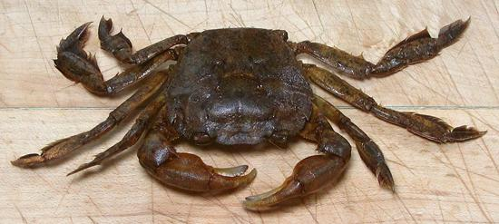

Green Tidal Crab

[River Swimming Crab, Sargassum Crab, Peregrine Crab; Talangka, Shore Crab,
Kalampay, Kalang (Philippine); Bodhi (Hindi); Varuna litterata
| similar: Asian Shore Crab, Japanese shore crab;
Hemigrapsus sanguineus]
The Green Tidal Crab inhabits brackish waters and far up rivers. It is
found from the east coast of Africa to the Mid Pacific Islands, ranging
from Japan to southern Australia. It is almost identical to the Asian
Shore Crab that's now a serious invader along the United States east
coast - except this one swims, so has flatter, hairy legs to help paddle
upstream. It can grow a little larger, up to 1.8 inches across the
carapace. Recipes are the same, and in the Philippens they go under the
same name, Talangka.
More on Crabs.
The photo to the left is the bottom side of the crab in the top photo.
The very narrow "apron" shows it is male, females have a very wide apron
to brood their eggs under.
Buying:
I have found these crabs in the frozen food
cases of a large Asian market in Los Angeles (San Gabriel). They were
packaged in a foam tray holding 14 ounces of crabs, product of Vietnam.
Vietnam is a little to far south for the Asian Shore Crab.
Cooking:
There are plenty of recipes for these crabs.
- Crab Sauce / Paste: In Thailand these crabs are often
used to make crab sauce similar to that made from Rice Paddy Crabs and
Mangrove Crabs. See our instructions
Making Rice Crab Pastes / Sauces.
- Deep Fried Tiny Crabs: popular in the Philippines and
elsewhere in Southeast Asia - sometimes called "Crab Popcorn". See our
recipe Tiny Crispy Crabs
.
- Taba nag Talangka / Aligue This is prepared salted
Crab Eggs (Roe) which, for reasons unknown, are called "Crab Fat" in
the Philippines. It takes a whole lot of female tiny crabs to make
this, but it is now available in jars. For details see our
Crab Pastes / Sauces page.
- Ginataang Talangka Philippine This is Green
Tidal / Asian Shore Crabs cooked in Coconut Milk.
sf_cbgrntdlz 190722 - www.clovegarden.com
©Andrew Grygus - agryg@clovegarden.com - Photos
on this page not otherwise credited © cg1
- Linking to and non-commercial use of this page permitted